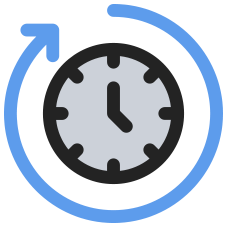

<ion-header>
  <ion-toolbar>
    <ion-buttons slot="start">
      <ion-back-button></ion-back-button>
    </ion-buttons>
  </ion-toolbar>
</ion-header>

<ion-content color="light">
  <ion-grid>

    <ion-row>
      <ion-col size="6" offset="3"  [routerDirection]="'forward'" [routerLink]="['/maintenance']">
        <div class="col-inner-conatiner padding">
          
          <div class="text">Normal Maintenance</div>
        </div>
      </ion-col>
    </ion-row>

    <ion-row class="gab">
      Select Maintenance Mode
    </ion-row>

    <ion-row>
      <ion-col size="6" offset="3" [routerDirection]="'forward'" [routerLink]="['/health-check']">
        <div class="col-inner-conatiner padding">
          
          <div class="text">Daily Health Check</div>
        </div>
      </ion-col>
    </ion-row>

  </ion-grid>
</ion-content>